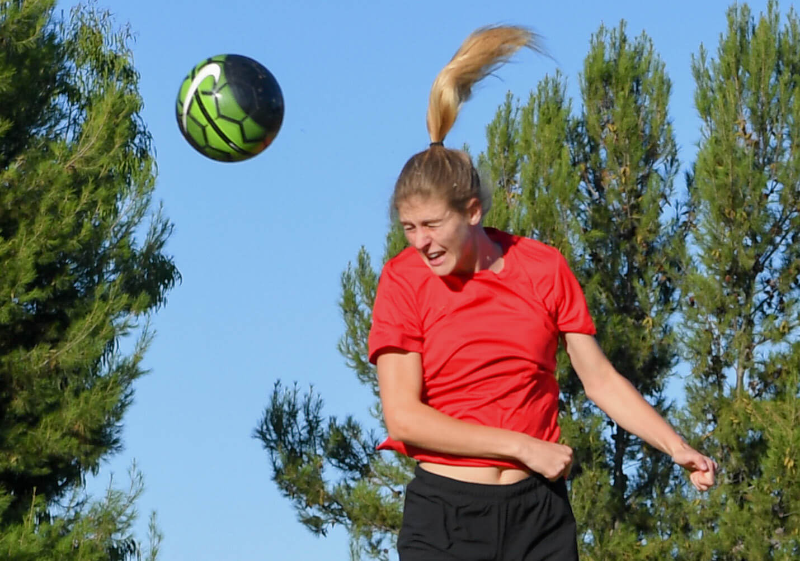
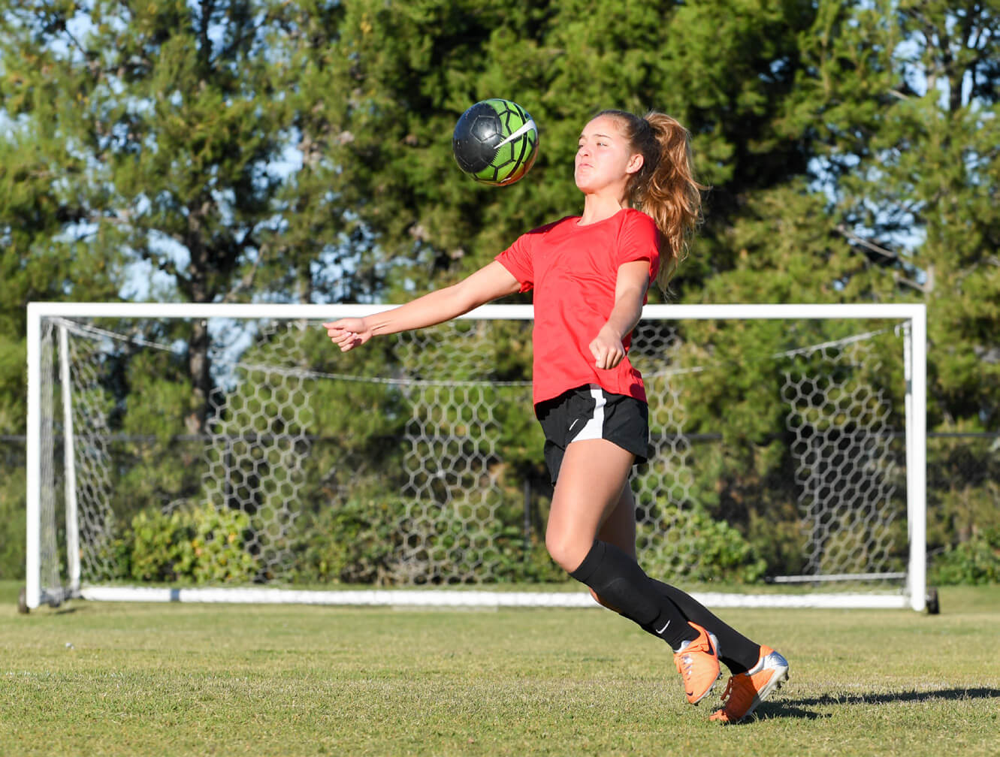
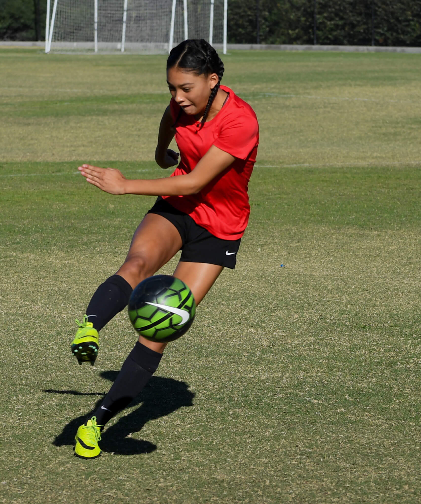
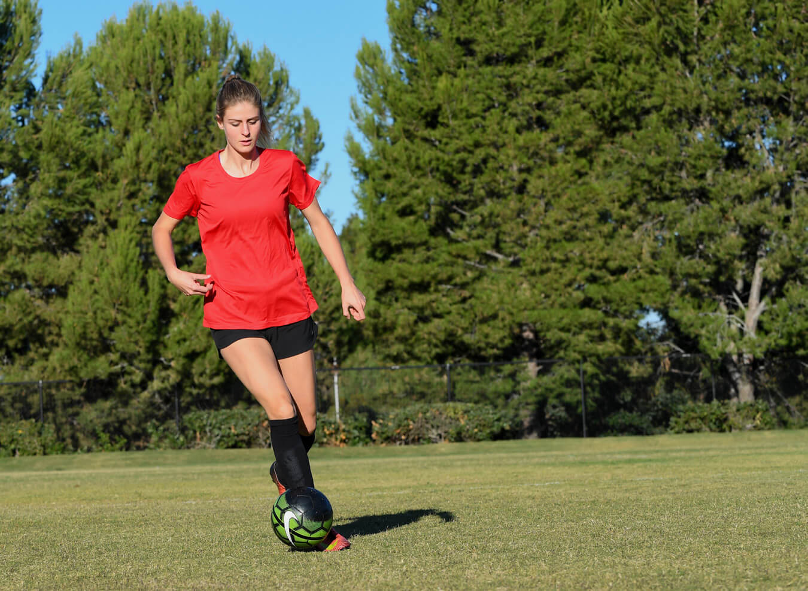
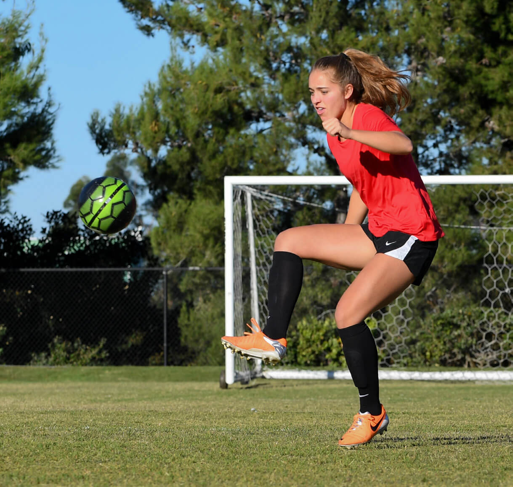
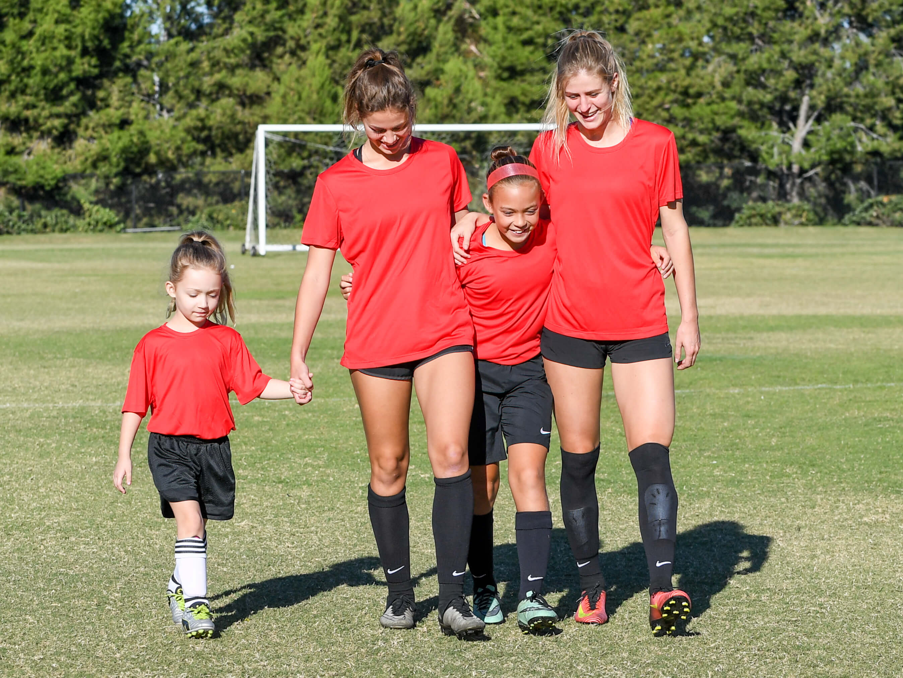

In Level 5
a soccer player has reached the highest level of her career: She is now a professional athlete. You have made it to the top; now how to do stay there? Maintaining good fitness and nutrition habits will help extend your playing years, but truly great players aren’t just stars in the game; they are representatives of their teams, their families, and their beliefs. Learn how to be a good role model as you express yourself on social media, in public and in the press, and as you interact with fans.

A positive attitude is essential to any athlete’s success both on and off the playing field. A Level 5 COMPLETE ATHLETE makes a habit of demonstrating the following five attributes:
RESPECT
SPORTSMANSHIP
TEAMWORK
PROFESSIONALISM
LEADERSHIP
Respect
As a Level 5 COMPLETE ATHLETE, you must continue to demonstrate respect for your coaches and game officials, your teammates and opponents, as well as yourself. As a professional soccer player, you should also demonstrate respect for the fans who come to see you and your team play. If someone asks for your autograph, be gracious and friendly. Remember, without the fans, you might not have a team to play on.
ATHLETES >> At the pro level right now, you’re going to start having fans follow you on Twitter, Facebook, and Instagram—and come to your games. You’ve got to show a lot of respect for those fans.
At the Super Cup in Sweden, you can see the players hugging fans afterward and just spending a great deal of time with them following the game. It is so moving to see little girls absolutely glowing as they get autographs from their favorite heroines. As a coach, it makes you proud to see your players making such a connection with the fans and as a fan; that moment of genuine engagement can mean so, so much.
Don’t ever take your fans for granted and don’t ever think you are above meeting them, snapping photos, or shaking hands. Your supporters are a huge part of who you are as a player.
ATHLETES >> When Christen Press got drafted in the first round and had to share the front position with Abby Wambach, we talked about how important it was for her to give respect to the senior players who have paid their dues. The reason why she’s playing at the level she is, is because these players paved the way for her. It is tremendously important when a rookie comes into a team that she gives the respect to the veteran players because of their experience and the ways that they can guide younger players on and off the field. It could be the turning point in a player growing as an athlete by being willing to be mentored. –Ziad
Sportsmanship
Good Sportsmanship starts with respect for one’s teammates, opponents, coaches, and officials. A Level 5 COMPLETE ATHLETE demonstrates good sportsmanship by:
- Playing by the rules and never cheating
- Acknowledging and encouraging her teammates
- Accepting responsibility for her own mistakes
- Never arguing with the officials
- Winning and losing with grace
As a professional soccer player, you must always remember that you are not the only player on the team. Even if you’re a star player, you can’t win a game all by yourself. Demonstrate good sportsmanship by giving credit to your teammates and your coaches when you win a game. You should also acknowledge that the other team was a formidable opponent.
ATHLETES >> One of the best examples of sportsman-ship at the professional level was the Women’s World Cup final between Japan and the United States. It was supposed to be a great matchup, but the game was over by halftime with a score of 4-1. What was so amazing, though, was that the Japanese team never argued with the referees or with one another. They stayed respectful and they continued to encourage one another as a team. After the game, they shook hands and didn’t act angry. They were being watched by their country and by the whole world, and they absolutely shone in terms of what real sportsmanship looks like. They were an example for every team, every player, and every coach to learn from. It was amazing to watch. –Walid and Ziad
Teamwork
A soccer player who reaches the professional ranks will likely join a team that is already a tight-knit family. She is going to need to earn the trust of her new teammates and maintain that trust using the skills she has learned up to this point.
Professionalism
As a Level 5 COMPLETE ATHLETE, a soccer player simply needs to be the professional that she is being paid to be by representing her team and her sport admirably. In addition to the list of do’s and don’ts presented in Level 4, a professional athlete must learn how to speak to the media correctly and in a way that presents her team in a good light.
ATHLETES >> At this level, every player has to understand that it’s not about the name on the back of the jersey; it’s about the name on the front of the jersey. Whenever you’re doing an interview or doing any charity work or involved in community activities, you’ve got to always remember that you’re representing a club, you’re representing your whole roster of that year, you’re representing the tradition that club set up in that community, and it’s not about you. It’s about the team.
It’s really important for the players to control their emotions, especially during an interview after a heart-breaking loss. Know that there are thousands, if not tens or hundreds of thousands, of people watching that interview. They are waiting for you to see what you are going to say. Are you going to blame a teammate for costing you the game, or are you going to do just the opposite? Are you going to say, “We gave it everything and today just wasn’t our day,” or are you going to start pointing fingers? Remember that every single thing you say or do at that level is representing your team, your traditions, and your community. –Ziad
Leadership
Whether or not a student-athlete moves into professional level play, the leadership skills she has developed over the years will continue to benefit her as she leaves college. In corporate America, as on a soccer team, a strong, confident leader can inspire a team to accomplish goals that they can’t accomplish on their own. This is one of the many reasons why many companies hire former athletes.
A former player may consider coaching, moving up from introductory levels to higher Levels of coaching. According to the U.S. Bureau of Labor Statistics, employment of coaches is expected to increase much faster than the average for all occupations through 2022. Nonetheless, there will be a lot of competition for college and professional coaching jobs.
The athlete who has developed strong leadership skills over the years will be a much more attractive candidate, because she will already possess the following:
- Excellent communication skills that allow her to effectively teach and convey information to her team
- The ability to make quick decisions, especially during games and other high pressure situations
- Effective interpersonal skills that allow her to relate to her players
- Negotiation skills that allow her to solve problems in the best interest of everyone involved
ATHLETES >> When you’re in that little tunnel with the opposing team lining up next to you, and the referees are right in front of you, and you are waiting for them to give you the green light to step on the field because the TV is going to start, and it’s going to be live feeding, and this is when the TV had the cameras on the team in that tunnel … imagine that you are standing right across from your opponent and channel that energy into your mind, your body, your eyes, and your voice.
Recently, just before a big Premier League game between Arsenal and Lester on television, there were cameras on both teams and about 80,000 fans in attendance waiting for the teams to step onto the field. All the players were trying to look sharp in front of the camera and put a smile on their faces, but when that green light was given for both teams to walk on the field, Arsenal captain’s whole demeanor changed. In an instant it went from, “Yeah, we have a big game right now, lads,” to, “Come on, men, we’re going to war and we are representing all of our fans today.” It was an amazing moment to witness the leader forget about everything going on around him and shift his mind to a place where he knew he had to get his players in that state of mind. –Walid and Ziad
Camille Levin >> I ended up going to Europe when I first entered the pros—a lot of Americans do. I was drafted by a Swedish team, and I was fortunate because a lot of Swedes speak English very well, so it wasn’t too big of an adjustment. But it can be kind of overwhelming at first to be living in a new country and not speaking the language, trying to learn a new culture, understanding how people work there, and how things work there in general. At the end of the day, though, I was there for soccer, so when you’re on the field, it doesn’t matter where you are or where you came from. There are different play styles and different approaches, but we were all there to play soccer. When I was on the field, I was confident in what I was doing and I was in my happy place. Wherever you are, at the end of the day, you’re on a soccer field with a ball and your team. It doesn’t matter what language they’re speaking or what culture differences there are—ultimately, you’re all there for the same reason. That is a pretty neat thing about the sport and how universal it is.


Preparation refers to off-the-field activities, such as practicing skills, eating right, staying hydrated, getting enough rest, and mentally preparing for a game or practice. A COMPLETE ATHLETE prepares to perform on the field of play by continuously improving on the following:
PRACTICE
NUTRITION
HYDRATION
RECOVERY
MENTALITY
Practice
If you have become a Level 5COMPLETE ATHLETE, you may already be playing soccer professionally. Like at Level 4, practice sessions will be supervised by an elite coaching staff. Nonetheless, a professional soccer player takes full responsibility for training and practicing safely, both independently as well as with the team. She knows her body well enough to know how to push her-self while at the same time minimizing the risk of injury. After all, an injured player can’t play at her full potential.
A Level 5 COMPLETE ATHLETE continues to practice those skills she has already mastered—including the basics. In addition, she develops and practices new and innovative skills that can provide a competitive advantage for her team.
ATHLETES >> I was stuck in Chicago O’Hare with a connecting-flight delay that wouldn’t leave until late the next day, so I called my friend Rory Damos, coach of the Chicago Red Stars. He came and picked me up and invited me to watch the team practice, so I did. Afterward, I noticed two players who stayed afterward doing extra shots: Julie Johnston and Christen Press, both of whom had just played in the World Cup. They were probably the two players who least needed to stay after for extra work, but there they were, fresh off of winning the World Cup. Even now, at the highest point of their careers, they were still putting in the extra time—which is the reason they reached such a high level in the first place.
I coached Christen Press from the time she was at Level 1 all the way through, and she always showed up early or stayed late to take shots. That’s the reason she broke the record for Stanford for the most goals scored ever in Stanford history. That’s why she already has 31 goals for the U.S. National Team. It goes to show you how important practice is and how it is even more important to put your own time into practices after your official practice is done. –Walid
Nutrition
As a college student-athlete moves on to professional sports, Nutrition continues to play a key role, not only for optimal performance on the field of play, but also for optimal health throughout her life.
Level 5 athlete nutrition guidelines >>
Each individual has different macronutrient needs, based on height, weight, age, activity level, and genetic background. The following macronutrient guidelines are based on age and estimated activity level for a Level 5 athlete:
- 45% carbohydrate
- 35% protein
- 20% fat
- No more than 7% saturated fat
- No trans fat
- 38-40 grams of fiber per day
- No more than 150 calories per day from sugar (37.5 grams or 9 teaspoons)
ATHLETES >> As a professional, the way you take care of yourself says everything about you. The more you put the right food in your body and stay in playing condition, the more longevity and fewer injuries you’re going to have as an athlete. It tells coaches what kind of shape you are in when you come in the preseason. Among the really great players, the common denominator is that they always take care of themselves in the off-season. They get up in the morning and work out on their own or with other players from the team, or they even hire their own conditioning coaches and nutritionists. They take care of themselves because they know how important it is for them when they show up to that first practice, to that first preseason camp. The biggest indicator to their coaches of where they are at, their commitment to their team, and how promising their future is, is what kind of care those athletes take of their bodies in the off-season.
Hydration
All athletes should drink water before, during, and after practices and games.*
HOW TO MAINTAIN PROPER HYDRATION*>>
- Before exercise, drink 16-20 full ounces within
- the two-hour period prior to exercise.
- During exercise, drink 4-6 full ounces.
- After exercise, replace 24 full ounces for every
- one pound of body weight lost during exercise.
- Adapted from guidelines provided by the
- American College of Sports Medicine (ACSM)
Recovery
A Level 5 athlete needs to eat and drink within 30 minutes of a practice or game to make up for the calories they are burning and fluids they are using. Replenishing calories and fluids also aids in muscle recovery and repair.
How to replenish calories and fluids >>
Drink 24 ounces of fluid for every pound of sweat lost
within a two-hour period of a game or practice.
Consume 30-35 grams of protein plus an equal amount
of carbohydrates within the 30 minute recovery window.
Sleep Sleep is still very important for muscle recovery and repair at this stage. Inadequate sleep will have a negative effect on athletic performance, and your body will not be able to “bounce back” as easily as it did when you were younger. According to the National Sleep Foundation, a Level 5 athlete should get 7-9 hours of sleep each night.
Obviously, research cannot pinpoint the exact amount of sleep needed by a particular individual, which is why it’s so important to pay attention to your own individual need for rest and recovery. One way to do this is by assessing how you feel on different amounts of sleep. For example:
- Are you productive, healthy, and happy on seven hours of sleep? Or do you need closer to nine hours of quality sleep time to feel this way?
- Do you wake feeling groggy, or do you bounce out of bed ready to take on the day?
- Do you depend on caffeine to get you through the day?
- Do you feel sleepy when driving?
Experimenting with different amounts of sleep time can give you a better idea of what your particular needs are for quality sleep.
ATHLETES >> Finding a work-life balance is so impor-tant for professional athletes. You see it over and over: When a team travels to another city, relatives, friends, and former teammates come out to meet the players. They want to grab dinner, grab a drink, catch up—and that is wonderful! But a professional also needs to know when to say, “Thank you! It was great seeing you, but it’s time for me to go now. I need to sleep before tomorrow.” A common denominator among great athletes is the strength to know when to say good-bye to well-intentioned visitors, because a lack of sleep is cumu-lative, and when it happens in city after city that people want to hang out, it can really wear on a person who is trying to balance their social life and the professional life where they get paid to do what they love.
Mentality
Being a better athlete does not necessarily mean training harder or longer. Certainly a youth soccer player must spend time physically preparing her body to meet the demands of a practice session or game. Similarly, engaging in Mental Preparation can help her perform at a higher level by creating the proper mindset for either practice or a game.
At Level 5, focus remains an important part of mental preparedness. More and more elite athletes and sports programs are incorporating mindfulness, meditation, and other practices into their training regimen. Accor-ding to Kristen Race, Ph.D., an expert on brain-based mindfulness solutions, “Mindfulness helps train the prefrontal cortex, the part of the brain that creates a calm and alert state of mind, which helps us stay focused, avoid distraction, and perform at our best.”
Practicing mindfulness is not easy, but like everything else in sports, the more you do it, the better you get at it. Dr. Race suggests the following tips for practicing mindfulness:
Engage in mindful breathing every morning as well as before a game or practice to create a calm and clear state of mind. Sit comfortably, close your eyes, and start to deepen your breath. Inhale fully and exhale completely. Focus on your breath entering and exiting your body. Start with five minutes and build up from there.
Conduct a body scan, which can release tension, quiet the mind, and bring awareness to your body in a systematic way. Lie down on your back, with your palms facing up and legs relaxed. Close your eyes. Start with your toes and notice how they feel. Are they tense? Are they warm or cold? Focus your attention here for a few breaths before moving on to the sole of your foot. Repeat the process as you travel from your foot to your ankle, calf, knee, and thigh. Bring your attention to your other foot and repeat the process.
Continue to move up to your hips, lower back, stomach, chest, shoulders, arms, hands, neck, and head—maintaining your focus on each body part and any sensations there. Breathe into any areas that are holding stress and try to release it.
Pay attention to your internal dialogue, which can reflect—or even shape—your mental state. Instead of thinking, “I hope I don’t miss the goal,” speak in terms of what you want to achieve; for example, “I’m going to score a point today.”
ATHLETES >> When Christen Press joined the national team, she began relying on meditation to help ready her mind to play. Her sister had attended Villanova and began to practice meditation there; she shared the techniques with Christen, and they became an impor-tant part of her preparation before each game. Christen has stated in interviews that she believes this conscious mindfulness gives her an edge to give her the mentality to be strong and focused for big-stage games, like the Olympics qualifiers, the World Cup qualifiers, and playing in World Cup matches.
Level 5 is the highest Level of soccer. At this level, your own dedication to fitness will not only make you stronger than your opponents, but also more flexible, more explosive, faster, and healthier.
All of the exercises and tests below have been described in earlier sections. Your goal is to compete against your previous scores and always strive to improve.
Lower Body Strength
Upper Body Strength
Flexibility/Mobility
Core Strength
Speed/Quickness/Endurance
Lower Body STRENGTH
At Level 5, as a professional, you are at the top of your game physically; you are stronger, more explosive, healthier, and better balanced than ever before. You are staying fit during crucial practices, getting more reps because of it, and seeing the difference on the pitch. If you keep your fitness and health during practice and games, it may be the difference to making a higher salary or being chosen to play for a national team. Stronger legs have made you faster to the point of contact, and you are now out-jumping your opponent for free balls in the air or winning slide tackles. Single-leg squats are easier, your balance is top-notch, and your jumping is exceptionally high. Congrats you are ready for Level 5 testing and dominating any challenge!
Upper body strength
You may now be playing against players 5-10 years older than you. You may be just as skilled, but are you just as strong? National coaches will be looking at you to separate yourself from competition, so the margin for error is minuscule. At this level, decisions may come down to matchups with other teams just as skilled, so skill may not be what is most important at some positions. You don’t want to be on the bench due to your lack of strength!
Core Strength
You are in the best shape of your life, playing against some of the most elite players in the world, and every athlete is out to either beat you or take your job—so staying healthy can be as important as scoring a goal. This is where having a strong core can be crucial for a soccer player. You need your hips to be strong to deliver accurate, crisp passes, and your lower back needs to be able to support all the torque that comes with kicking a ball powerfully. A weakness in your core simply means you are likely going to be injured sooner rather than later.
Level 5 FITNESS TEST
Lower Body Strength >>
- Perform 10 full-range single-leg squats on both L/R legs
- Hold a single-leg wall squat for at least 85 seconds
- Broad jump distance of 92 inches or greater
- Vertical jump distance of 22 inches or greater
Upper Body Strength >>
- Bent-arm, hold pull-up for 30 seconds
- Perform 45 push-ups in 60 seconds
Flexibility/Mobility >>
- Sit-and-reach test minimum of 43 centimeters
- 90/90 test is pass or fail
Core Strength/Balance >>
- Hold plank for 3 minutes
- Side plank L/R, 60 seconds each
- Perform a hip-lift march with perfect form 3 minutes
- Balance on one leg for 60 seconds
- Standing medicine ball throw 6 pound ball and minimum distance of at least 8 yards
Speed/Quickness/Endurance >>
- 5-10-5 Shuttle Run in 4.7 seconds
- 30-yard sprint in 4.5 seconds
- Beep Test score 8/6-10/1 or better
Level 5 is the highest level of technical ability, and reaching this Level of soccer requires the ability to perform on the highest stage. Playing at the professional/international level will consist of many challen-ges and sacrifices. At this level, you are constantly under the microscope, with the pressure on to perform on the biggest stage, and it is one that few get to experience. Remember, being a COMPLETE ATHLETE, it is up to you to continue to master the four previous Levels in order to play the game of soccer at this Level. Understanding the tactical roles and responsibilities with players that can interchange within systems, will test your technical ability to the highest level.
Playing at the professional/international level is the greatest honor in the game of soccer. Using these technical tools and developing them to perform consistently in this environment is the final challenge on your journey to being a COMPLETE ATHLETE:
Foundational Ball Skills/Dribbling
Passing
Ball Control
Ball Striking/Shooting
Heading
Foundational Ball Skills/Dribbling
- Consistent dribbling habits on both feet to keep all abilities sharp and consistent
- The ability to read opponents’ weaknesses to use your moves effectively
- Being able to perform creative skill, speed, and change of pace with both feet, and to play either side of the field or central
- Deception to freeze opponents with upper and lower body
- Understanding to read teammates’ movements, in order to penetrate your opponents’ open areas
Passing
- The ability to weight balls to play to feet or lead away from pressure with both feet accurately in all areas of the field
- Driving balls with range of 50 yards plus with both feet
- Bending the ball with appropriate weight and accuracy for service or to switch the field with both feet
- Chipping weighted balls in by reading the opponents’ shape and timing of teammates’ runs
- Outside of the foot in tight areas to show quality and vision to break through opponents
- Deceptive Cryuff, heel and flick passes to play through tight gaps to penetrate
Ball Control
- To use all surfaces of the feet and body from all distances on the field
- To receive the ball at the highest level of speed with the inside or outside of both feet away from pressure
- The ability to turn with physical pressure with either foot inside or outside to beat opponent
- The ability to control the ball out of the air at full speed from 50 yards plus with both feet, either thigh, or on the chest
- Receiving to turn with the ball with physical pressure out of the air or off the bounce
Ball Striking/Shooting
- Reading the positioning of the goalkeeper for finishing with instep to drive inside and outside of the box with either foot
- Inside of the foot finishing with both feet
- Reading the positioning of the goalkeeper to bend the ball with either foot to finish
- Chipping the goalkeeper with either foot when high off line or out of position
- Inside of the foot volleys with both feet from wide service or knockdowns
- Outside of the foot to beat goalkeeper when sliding in the opposite direction
- Juggle or flick-up touch to set up volley, or timing of full scissor kick, or over-the-head kick when the ball arrives into your body in the right way to connect on goal
Heading
- For distance, to pass or clear over the opponents midfield
- To flick with timing of teammates’ run
- To clear high and wide to stop pressure
- Deceptive movement and timing to step in front or behind to lose opponent to then snap flick across the goalkeeper to finish or head down either side of the goalkeeper to finish
- Diving header waist-height ball at speed to clear the ball, or arrive in the area at full speed to get on the end of wide service to finish

For student-athletes who become one of the rare few who move on to the professional level in their sport, life can sometimes feel like an open book. More people are watching them play, and they are more in the public eye than ever before. A Level 5 COMPLETE ATHLETE is one who continues to successfully balance all the elements in her life, including:
Family
Academics
Social Life
Role Model
Living Your Sport
As a professional athlete, you should continue to strive to maintain positive relationships with your family members by:
- Setting aside a specific day and time each week to talk to your family by phone
- Communicating regularly via e-mail or text messaging
- Attending special family events whenever possible
- Reassuring your family that they are still an important part of your life
- Remembering that you’re in the public eye, and always strive to make your family proud
ATHLETES >> Whenever we do a Q&A with profession-al athletes for our younger players, one of the most common questions we hear is, “What do you do when you have a bad game? How do you react?”
The common denominator for the majority of the pros is that they make a separation between the game and their lives. After a game, they go home and spend time with their husband or boyfriend or parents or siblings—whatever their family situation is, they spend time with those people they love the most to help detach emotionally from the game.
As we tell them, there is nothing we can do to change the outcome now except to look forward to practicing and fixing whatever didn’t go right. But they have to have that positive retreat from the pressure of the sport; don’t bring the negative vibe of feeling like a failure or that you let people down into your family space. Just knowing that until it’s time to get back on the practice field, now is the time to enjoy the company of family goes a long way in helping a professional play soccer at the highest level for a long time.
Academics
As a Level 5 COMPLETE ATHLETE, you should have earned your degree at college. As a professional athlete, you should take advantage of continuing education opportunities. For example, some sports organizations provide signing bonuses that include money just for school. Even if you’re not provided with education money, you should strive to expand your mind in new and different ways.
For example, business classes can help you later in life when you retire from sports. Taking classes just for fun, such as a foreign language class or an art class, can provide an opportunity to develop creative skills. Yoga classes can help you reduce stress and even improve your performance on the field of play.
ATHLETES >> The women’s professional league draft is in December, so we have a lot of players who opt out of school in December to get drafted—which means they don’t finish their last semester of school. What many of them end up doing is to get drafted, play their season, but then come back to finish their last semester during the off-season.
That is so important because, at the end of the day, they have invested so much time in school and they are so close to finishing that it would be a waste not to. Even if they get drafted, they can still go back and finish the degree, and we always encourage them to do so. Otherwise, what do you do if your career is cut short due to injury or simply when you choose to retire? You’ve got to have that degree for thinking about transitioning to life outside of soccer. –Walid and Ziad
Social Life
As a Level 5 COMPLETE ATHLETE, you should continue to maintain a supportive social life. Make time for your friends when you can, and always strive to be a true friend. At the same time, be careful who you associate with, because you will be judged by the company you keep.
ATHLETES >> One time, we were running a camp with Paul Burns, who back then was the assistant coach for Newcastle United in England, in the Premier League. He said, “What other element do you add to the most important elements that make a soccer player? What makes a soccer player is their technical ability, tactical ability, psychological and physical ability, but in the Premier League, one of the most important things that we look for is your lifestyle.”
When players begin signing contracts and making money, they often don’t know what to do with the sudden fame and fortune, and their entire lifestyle changes. Their social life becomes all about going out, partying, having a good time—and then they end up coming to games unprepared. It affects the way they play, as well as their mental game.
Who you choose to hang around with and how you choose to spend your time makes even more difference now than it did when you were in school, because now you don’t have your parents to hold you accountable or the fear of losing a scholarship to help you make good choices. Pick the right friends, surround yourself with the right people, pay attention to the older players who have learned how to find the balance, and that will be the key to being truly successful.
Role Model
These days, everyone has a cell phone with a camera. For a professional athlete—or anyone in the public eye—one mistake can be broadcast internationally in a matter of moments. Remember that young people are looking up to you. Be a good role model citizen by behaving well and by engaging in charity work and community service.
Kassi McCluskie >> Now that my profession is as a coach, I appreciate even more how important it is to have good role models in women’s sports. Mentoring is so important for both the older and younger players with whom I work. As a coach, I love having a Big Sister/Little Sister pairing with the teams in our club so that players at lower Levels are matched with players at the higher Levels. The girls are encouraged to go to one another’s games to cheer each other on, or to make encouragement cards and signs before big games. Unfortunately, I still don’t think there are enough female role models out there in the world of sports, so it is really fantastic for younger girls to have older girls they can watch and learn from in a personal, one-on-one manner. In the same way, it is a wonderful leadership learning opportunity for older players to interact with the younger girls and think carefully not only about how to cheer for them and work on skills, but also about how they talk and act. I think it is a positive experience for everyone.

When a player reaches the pros, certain things are completely new, but other things remain exactly the same as they have always been. For example, you are going to be up against better players than ever before and new playing styles you may not have encountered in the past—especially if you’re playing internationally. That means your game always has to be evolving and adapting, and you can’t think, “I’ve arrived! I know all I need to know.” Now, it is more important than ever to keep improving and practicing and growing. Even as you look to make the most of your own talents and unique skills, be sure you understand how those things fit in the team dynamic.
When I was growing up, there weren’t really many girls’ soccer programs, so I ended up playing on mostly co-ed teams that didn’t have many girls on them. They were really just mostly boys’ teams. As a result, I learned to be competitive in a different kind of way, and I’ve always been grateful for how those experiences shaped me to make me a tougher player. I know other women who had similar experiences. Sometimes, girls on co-ed teams were told, “Oh, don’t play so hard. You don’t need to work as hard as you do.” My parents never said anything like that, but I know plenty of women who did hear things like that. When I got to college, however, the message was always, “Don’t you want to see how good you can be. Don’t you think you owe that to yourself?” I loved that message, and I think it is as true at Level 1 as it is at Level 5, and every Level in between. Working hard is not just for a certain few on the team—it’s for everyone.
One of the ways I let my teammates on the U.S. National Team know I cared about them was by working hard and giving my all every single practice, every single game, every single minute of the day. I wanted them to know that I was thinking about our team when we were together as well as when we were apart. That meant that I showed up to camp as fit as possible, instead of letting my fitness lapse in the off-season; and I knew they were doing the same for me. And I was committed to continuing to learn. I learned something every single day because I never wanted to stop growing and improving as a player and as a person. The more invested I was in getting better in every aspect of my professional and personal life, the better person and player I was going to be. That’s what makes an athlete a complete athlete